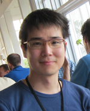
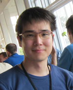

|  @Helsinki |
SOH, Takehide
|
| English Page | Japanese Page | |
| Tamura Lab | CSPSAT | Scarab |
|  @Helsinki |
SOH, Takehide
|
| English Page | Japanese Page | |
| Tamura Lab | CSPSAT | Scarab |
| About me | Publications | Software | Links |
as Pricipal Investigator (PI)
as Co-Investigator JSPS Kakenhi (COI-JSPS)
as Co-Investigator NII Collaborative Research (COI)